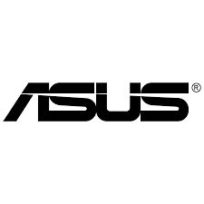
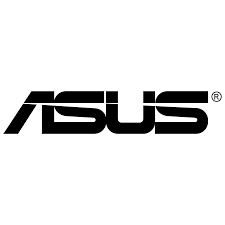

Samsung Group («Самсунг Груп», кор. 삼성그룹, Samseong Gurub, Samsŏng Gurup) — южнокорейская группа компаний, один из крупнейших чеболей, основанный в 1938 году. На мировом рынке известен как производитель высокотехнологичных компонентов, включая полноцикловое производство интегральных микросхем, телекоммуникационного оборудования, бытовой техники, аудио- и видеоустройств. Главный офис компании расположен в Сеуле.
AsusTek Computer Inc. (кит. 華碩電腦股份有限公司 Huáshuò Diànnǎo Gǔfèn Yǒuxiàn Gōngsī; кратко — ASUS (/eɪˈsuːs/[2] или /ɑːˈsuːs/[3] или /æˈsuːs/[4]) — расположенная на Тайване транснациональная компания, специализирующаяся на компьютерной электронике (как комплектующие, так и готовые продукты).
Название торговой марки Asus происходит от слова Pegasus («Пегас»)[2][5].
Котировки ценных бумаг: NASDAQ: AKCPF.
ewlett-Packard (HP, Хью́летт-Па́ккард) — созданная в 1939 году компания — поставщик аппаратного и программного обеспечения для организаций и индивидуальных потребителей. Штаб-квартира — в Пало-Альто (Калифорния). Одна из крупнейших американских компаний в сфере информационных технологий.
 
